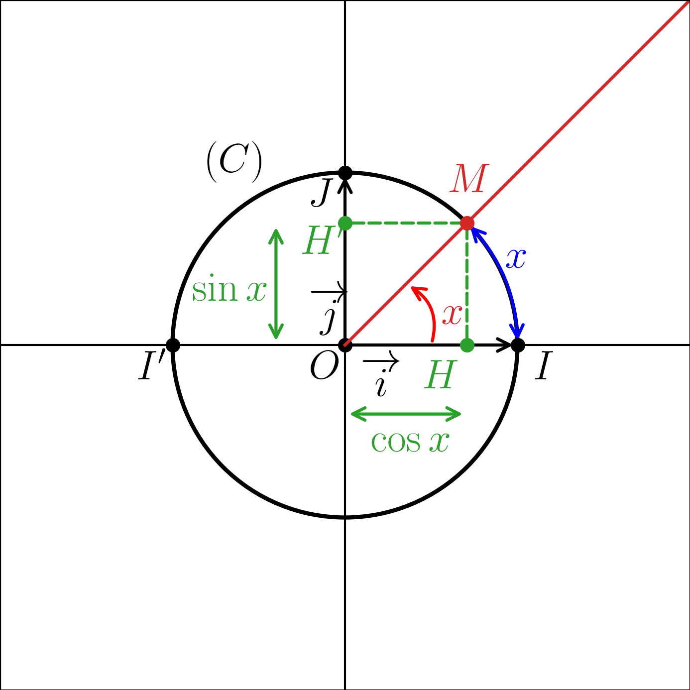
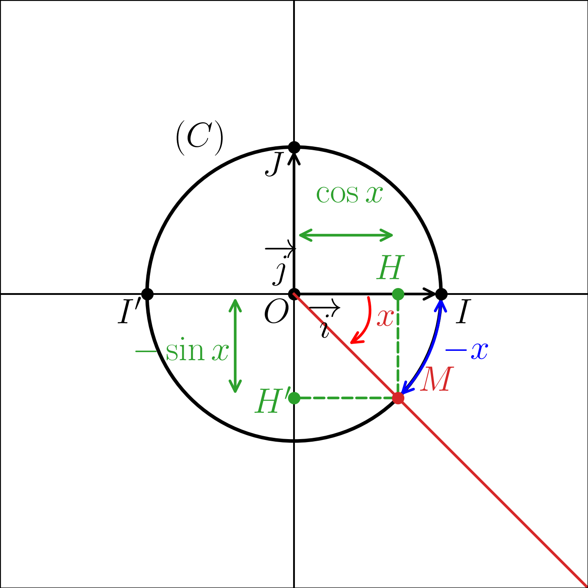
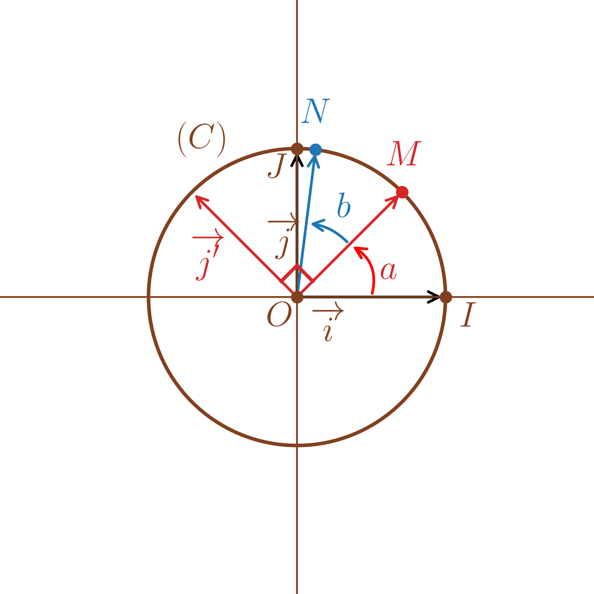
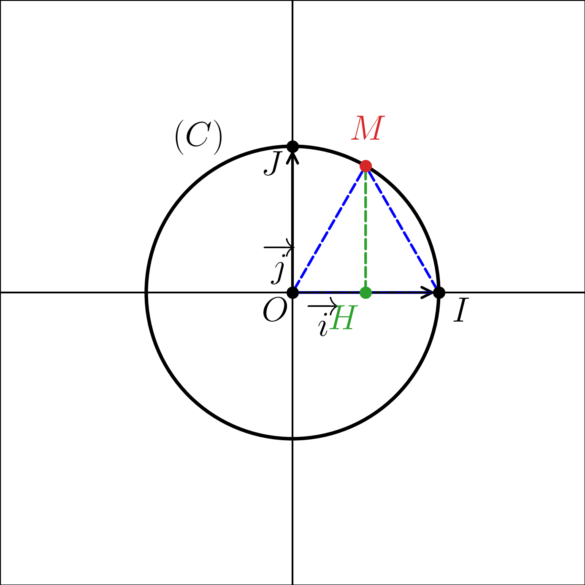
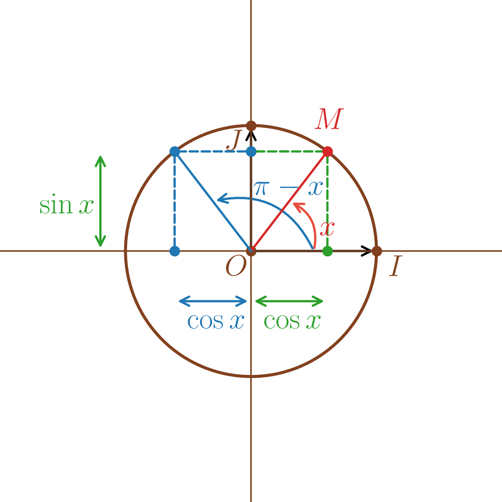
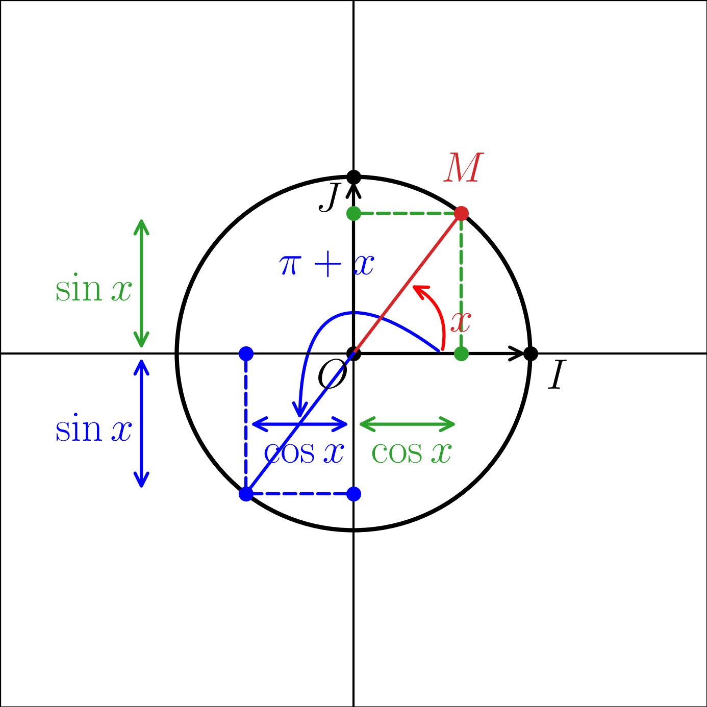
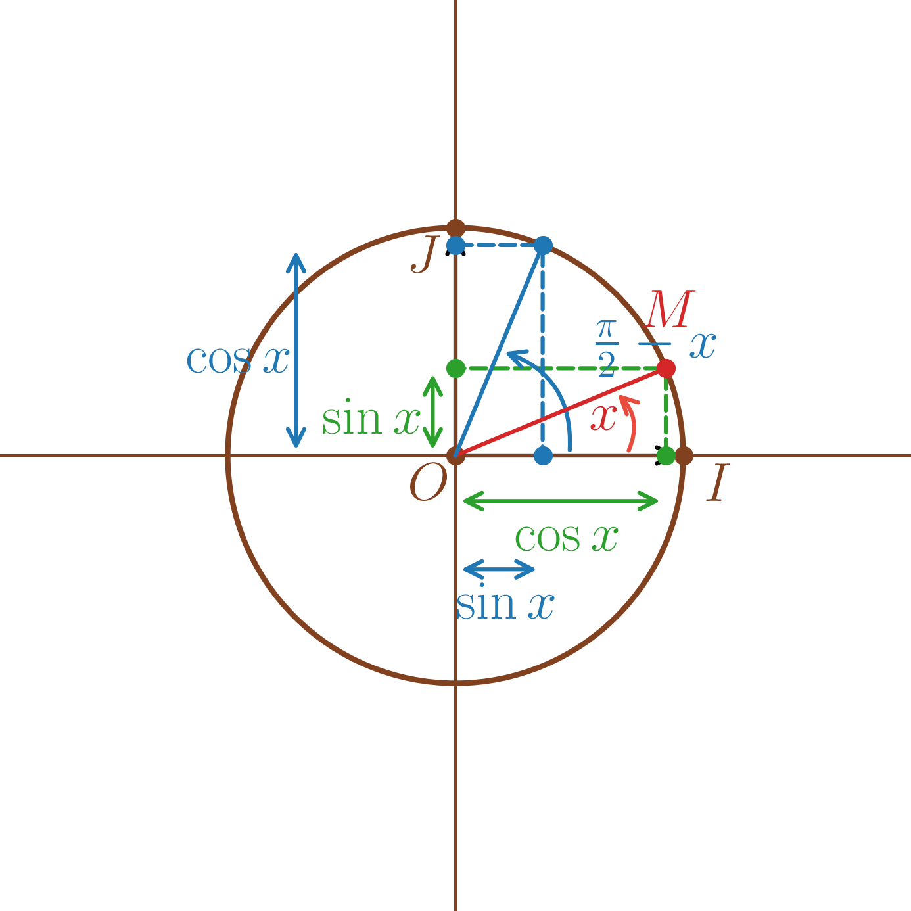
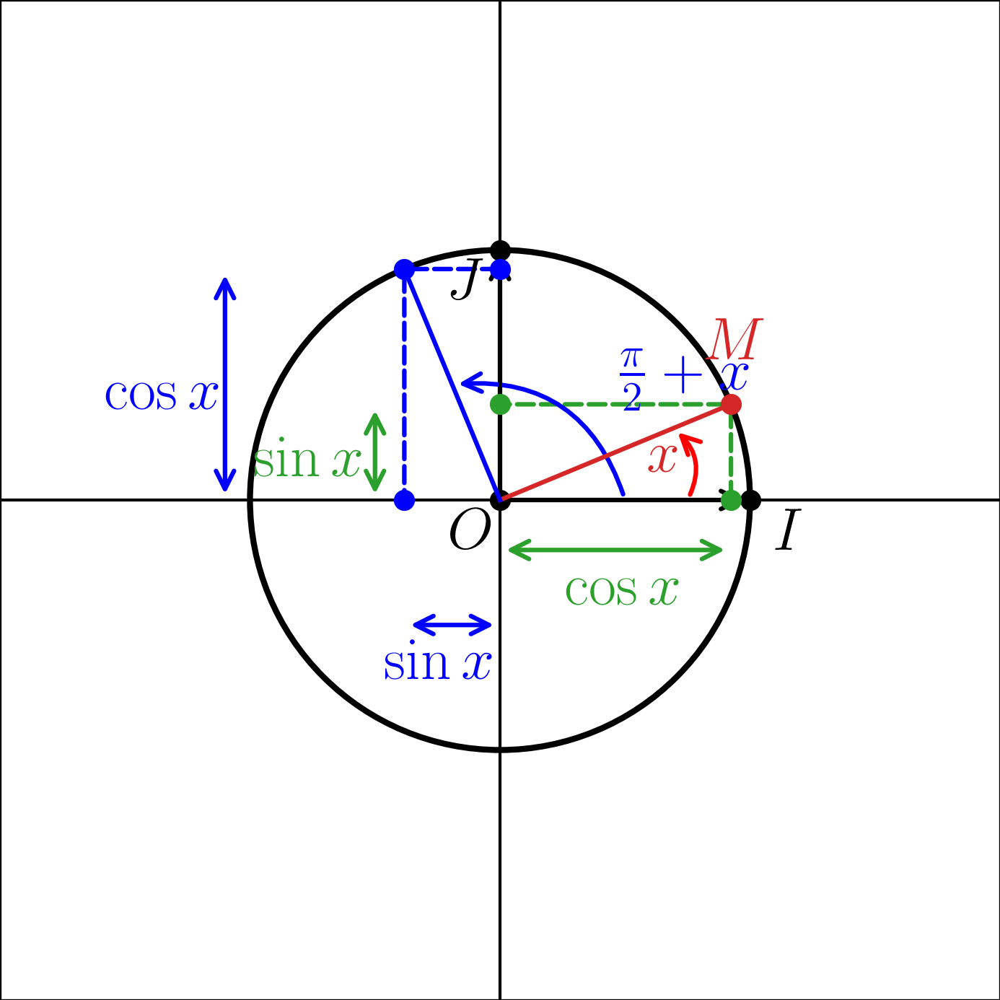

Dans le plan usuel, on considère un cercle \((C)\), de centre \(O\) et de rayon \(1\). On choisit un sens de rotation dans le plan (et donc sur le cercle) : le sens inverse des aiguilles d’une montre dit sens direct ou trigonométrique ; le sens contraire étant dit rétrograde.
On considère un point \(I\) de \((C)\) et le repère orthonormé \((O,\vec i,\vec j)\) avec \(\vec i=\overrightarrow{OI}\) et \(\vec j\) directement orthogonal à \(\vec i\).
 |
 |
On suppose connue la notion de longueur d’un arc du cercle \((C)\) : la longueur de \((C)\) est \(2\pi\).
Soit \(x\) un réel.
Si \(x\ge0\), on considère le point \(M\) de \((C)\) tel que la longueur de l’arc \(\overset{\huge\frown}{IM}\), parcouru dans le sens direct, soit \(x\).
Si \(x<0\), on considère le point \(M\) de \((C)\) tel que la longueur de l’arc \(\overset{\huge\frown}{IM}\), parcouru dans le sens rétrograde, soit \(-x\).
Une mesure de l’angle \((\overrightarrow{OI},\overrightarrow{OM})\) en radians est alors par définition \(x\).
Le point \(M\) se projette sur \((O,\vec i)\) en \(H\) et sur \((O,\vec j)\) en \(H'\). Par définition, \[\cos x = \overline{OH} \qquad \text{et} \qquad \sin x = \overline{OH'}.\]
Pour \(x=\pi\), le point \(M\) est le point \(I'\) symétrique de \(I\) par rapport à \(O\), puisque la longueur du demi-cercle \(\overset{\huge\frown}{II'}\) vaut \(\pi\). On a donc \[\cos\pi=-1 \qquad \text{et} \qquad \sin\pi=0.\]
Pour \(x=\dfrac{\pi}{2}\), le point \(M\) est le point \(J\) tel que \(\overrightarrow{OJ}=\vec j\) puisque le quart de cercle \(\overset{\huge\frown}{IJ}\) a pour longueur \(\dfrac{\pi}{2}\). On a donc \[\cos\left(\frac{\pi}{2}\right)=0 \qquad \text{et} \qquad \sin\left(\frac{\pi}{2}\right)=1.\]
Soit \(a\) et \(b\) deux réels.
On considère \(M\) le point de \((C)\) tel que \((\overrightarrow{OI},\overrightarrow{OM})\) ait pour mesure \(a\) (en radians) et le point \(N\) de \((C)\) tel que \((\overrightarrow{OM},\overrightarrow{ON})\) ait pour mesure \(b\) (en radians). Alors \((\overrightarrow{OI},\overrightarrow{ON})\) a pour mesure \(a+b\).
On a \[\overrightarrow{OM}=(\cos a)\vec i + (\sin a)\vec j\] et \[\overrightarrow{ON}=(\cos b)\overrightarrow{OM}+(\sin b)\vec j'\] (où \(\vec j'\) est le vecteur unitaire directement orthogonal à \(\overrightarrow{OM}\)).

\[\quad\] Donc \[\overrightarrow{ON} =(\cos b)\big((\cos a)\vec i+(\sin a)\vec j\big) +(\sin b)\big(-(\sin a)\vec i+(\cos a)\vec j\big).\]
Comme \[\overrightarrow{ON}=(\cos(a+b))\vec i+(\sin(a+b))\vec j,\] on en déduit \[\cos(a+b)=\cos a\cos b-\sin a\sin b\] et \[\sin(a+b)=\sin a\cos b+\sin b\cos a.\]
Pour \(a\) réel quelconque,
\(\cos^2 a + \sin^2 a = 1\)
\(\cos 2a = \cos^2 a - \sin^2 a\)
\(2\cos^2 a = 1 + \cos 2a\)
\(2\sin^2 a = 1 - \cos 2a\)
\(\sin 2a = 2\sin a \cos a\)
Cela s’obtient par théorème de Pythagore dans le triangle OMH, rectangle en \(H\).
Par ce qui précède, \(\cos(2a) = \cos(a+a) = \cos^2 a - \sin^2 a.\)
\(\cos(2a)= \cos^2 a - \sin^2 a = \cos^2 a -(1-\cos^2 a) = 2\cos^2 a-1 \iff 2\cos^2 a = 1+\cos(2a).\)
\(\cos(2a)= \cos^2 a - \sin^2 a = 1-\sin^2 a -\sin^2 a = 1-2\sin^2 a \iff 2\sin^2 a = 1-\cos(2a).\)
Par ce qui précède, \(\sin(2a) = \sin(a+a) = 2\sin a \cos a.\)
\(\cos 0 = 1, \qquad \sin 0 = 0\)
\(\cos\!\left(\frac{\pi}{3}\right)=\frac12, \qquad \sin\!\left(\frac{\pi}{3}\right)=\frac{\sqrt3}{2}\)
\(\cos\!\left(\frac{\pi}{6}\right)=\frac{\sqrt3}{2}, \qquad \sin\!\left(\frac{\pi}{6}\right)=\frac12\)
\(\cos\!\left(\frac{\pi}{4}\right) = \sin\!\left(\frac{\pi}{4}\right) = \frac{\sqrt2}{2}\)
Avec \(x = 0\), le point \(M\) se trouve en \(I = (1,0)\).
Avec \(x = \frac{\pi}{3}\), le triangle \(OIM\) est isocèle car \(0I = OM = 1\).
Donc les angles \((\overrightarrow{OI},\overrightarrow{IM})\) et \((\overrightarrow{MO},\overrightarrow{MI})\) ont la même mesure que l’on note \(\alpha\).
Comme la somme des angles d’un triangle fait \(\pi\), on a \(\frac{\pi}{3}+2\alpha = \pi \Longrightarrow \alpha =\frac{\pi}{3}\) donc les trois angles de ce triangles sont égaux et on en déduit qu’il est même équilatéral.
Donc \(H\) est le milieu de \([OI]\) et \(\cos\left(\frac{\pi}{3}\right) = \frac{1}{2}\). De plus, \(\sin^2 \left(\frac{\pi}{3}\right) =1-\cos^2\left(\frac{\pi}{3}\right)\) et \(\sin \left(\frac{\pi}{3}\right)\geq 0\) donc \(\sin^2 \left(\frac{\pi}{3}\right) = \sqrt{1-\frac{1}{2}^2} = \frac{\sqrt 3}{2}\).

D’après ce qui précède, pour \(a\in \mathbb{R}\), \(\cos^2 a = \frac{1 + \cos 2a}{2}\) donc avec \(a = \frac{\pi}{6}\), \(\cos^2 \left(\frac{\pi}{6}\right) = \frac{1 + \cos \left(\frac{\pi}{3}\right)}{2} = \frac{3}{2}\) et comme \(\cos \left(\frac{\pi}{6}\right) \geq 0\), \(\cos \left(\frac{\pi}{6}\right) = \frac{\sqrt{3}}{2}\). Comme dans le point précédent, on obtient \(\sin\!\left(\frac{\pi}{6}\right)\).
D’après ce qui précède, pour \(a\in \mathbb{R}\), \(\cos^2 a = \frac{1 + \cos 2a}{2}\) donc avec \(a = \frac{\pi}{4}\), \(\cos^2 \left(\frac{\pi}{4}\right) = \frac{1 + \cos \left(\frac{\pi}{2}\right)}{2} = \frac{1}{2}\) et comme \(\cos \left(\frac{\pi}{4}\right) \geq 0\), \(\cos \left(\frac{\pi}{4}\right) = \frac{1}{\sqrt{2}}=\frac{\sqrt{2}}{2}\). Comme dans le point précédent, on obtient \(\sin\!\left(\frac{\pi}{4}\right)\).
Pour tout \(k\in\mathbb{Z}\),
\(\cos(k\pi)=(-1)^k, \qquad \sin(k\pi)=0\)
\(\cos\!\left(\frac{\pi}{2}+k\pi\right)=0, \qquad \sin\!\left(\frac{\pi}{2}+k\pi\right)=(-1)^k\)
Pour \(x = k\pi\), \(M\) est en \(I\) si \(k\) est pair et \(I'\) si \(k\) est impair.
Pour \(\frac{\pi}{2}+k\pi\), \(M\) est en \(J\) si \(k\) est pair et \(J'\) si \(k\) est impair où \(J'\) est le symétrique de \(J\) par rapport à \((O,\overrightarrow{i})\).
Pour \(a\) réel quelconque,
\(\cos(\pi-a)=-\cos a, \qquad \sin(\pi-a)=\sin a\)
\(\cos(\pi+a)=-\cos a, \qquad \sin(\pi+a)=-\sin a\)
\(\cos\!\left(\frac{\pi}{2}-a\right)=\sin a, \qquad \sin\!\left(\frac{\pi}{2}-a\right)=\cos a\)
\(\cos\!\left(\frac{\pi}{2}+a\right)=-\sin a, \qquad \sin\!\left(\frac{\pi}{2}+a\right)=\cos a\)
On justifie, sans les démontrer, géométriquement les égalités ci-dessous.
 |
 |
 |
 |